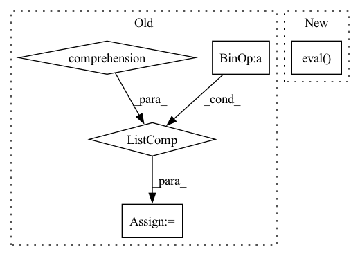

Pattern ID :15972
Before Change
print("{} model, anchors, and classes loaded.".format(self.model_path))
// 画框设置不同的颜色
hsv_tuples = [(x / len(self.class_names), 1., 1.)
for x in range(len(self.class_names))]
self.colors = list(map(lambda x: colorsys.hsv_to_rgb(*x), hsv_tuples))
self.colors = list(
map(lambda x: (int(x[0] * 255), int(x[1] * 255), int(x[2] * 255)),
self.colors))
After Change
self.net = YoloBody(self.anchors_mask, self.num_classes)
device = torch.device("cuda" if torch.cuda.is_available() else "cpu")
self.net.load_state_dict(torch.load(self.model_path, map_location=device))
self.net = self.net.eval()
print("{} model, anchors, and classes loaded.".format(self.model_path))
if self.cuda:
In pattern: SUPERPATTERN
Frequency: 3
Non-data size: 5
Instances Fragment ID: 53818119
Project Name: bubbliiiing/yolov4-pytorch
Commit Name: 34d2e3e10b07fd5a27a911b0800fb8354f1949a7
Time: 2021-09-21
Author: 47347516+bubbliiiing@users.noreply.github.com
File Name: yolo.py
M Class Name: YOLO
N Class Name: YOLO
M Method Name: generate(1)
N Method Name: generate(1)
M Parent Class: object
N Parent Class: object
M File Name: yolo.py
N File Name: yolo.py
M Start Line: 83
M End Line: 112
N Start Line: 94
N End Line: 98
Before Change
"--bs", type=int, default=8, required=False, help="batch size: how many to summarize at a time",
)
args = parser.parse_args()
examples = [" " + x.rstrip() for x in open(args.source_path).readlines()]
generate_summaries(examples, args.output_path, args.model_name, batch_size=args.bs, device=args.device)
if __name__ == "__main__":After Change
mbart = MBART.load_from_checkpoint(os.path.join(args.ckpt_path, args.ckpt_name))
mbart.eval()
mbart = mbart.to(args.device)
tokenizer = mbart.tokenizer.from_pretrained(args.model_name)
dataset = Seq2SeqDataset(tokenizer, args.source_path, args.predict_split, args.max_source_length, args.max_target_length)
dataloader = DataLoader(dataset, batch_size=args.batch_size, collate_fn=dataset.collate_fn, num_workers=1, shuffle=False) Fragment ID: 53818125
Project Name: stanford-oval/genienlp
Commit Name: 6b56b4f2cb4597c95a39218e203ffdc7b96c4408
Time: 2020-04-27
Author: mehrad@stanford.edu
File Name: genienlp/paraphrase/evaluate_bart.py
M Class Name: AnonimousClass
N Class Name: AnonimousClass
M Method Name: run_generate(1)
N Method Name: run_generate(0)
M Parent Class:
N Parent Class:
M File Name: genienlp/paraphrase/evaluate_bart.py
N File Name: genienlp/paraphrase/evaluate_bart.py
M Start Line: 63
M End Line: 81
N Start Line: 45
N End Line: 54
Before Change
print("{} model, anchors, and classes loaded.".format(self.model_path))
// 画框设置不同的颜色
hsv_tuples = [(x / len(self.class_names), 1., 1.)
for x in range(len(self.class_names))]
self.colors = list(map(lambda x: colorsys.hsv_to_rgb(*x), hsv_tuples))
self.colors = list(
map(lambda x: (int(x[0] * 255), int(x[1] * 255), int(x[2] * 255)),
self.colors))
After Change
device = torch.device("cuda" if torch.cuda.is_available() else "cpu")
self.net.load_state_dict(torch.load(self.model_path, map_location=device))
self.net = self.net.eval()
print("{} model, and classes loaded.".format(self.model_path))
if self.cuda:
Fragment ID: 53818124
Project Name: bubbliiiing/centernet-pytorch
Commit Name: d8a34002c4045ca583b43a5f431513f8fd5ac37c
Time: 2021-10-09
Author: 47347516+bubbliiiing@users.noreply.github.com
File Name: centernet.py
M Class Name: CenterNet
N Class Name: CenterNet
M Method Name: generate(1)
N Method Name: generate(1)
M Parent Class: object
N Parent Class: object
M File Name: centernet.py
N File Name: centernet.py
M Start Line: 77
M End Line: 110
N Start Line: 102
N End Line: 114